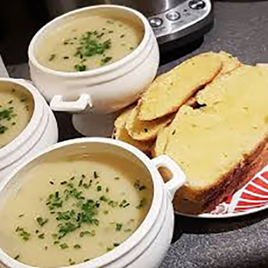

I grew up in a bit of an odd home. My parents are immigrants from Egypt, and although I ate a lot of Egyptian food growing up, my mother also liked to experiment with food from other cultures. I've been meaning to get her recipes down and organized in one place for a while, so here they are!
Leek & Potato Soup
A super American dish I grew up with; it's exactly what it sounds like.

4-5 medium leeks, dark parts removed
3 T unsalted butter
3 small Yukon potatoes, peeled and diced small
1 quart vegetable broth
1 cup heavy cream
1 cup buttermilk
1/2 teaspoon white pepper
1 tablespoon choppped chives
salt to taste
In a large saucepan over medium heat, melt the butter sweat the leeks with a pinch of salt for about 5 minutes. Reduce the heat a bit and let the leeks tenderize for another 20-30 minutes. Increase to medium-high heat and add the broth and potatoes. When the mixture starts boiling, reduce to low heat until potatoes are soft, another 45 minutes. Remove from heat and blend with an immersion blender until smooth. Add cream, buttermilk, and peppers. Sprinkle with chives. Good hot or cold.